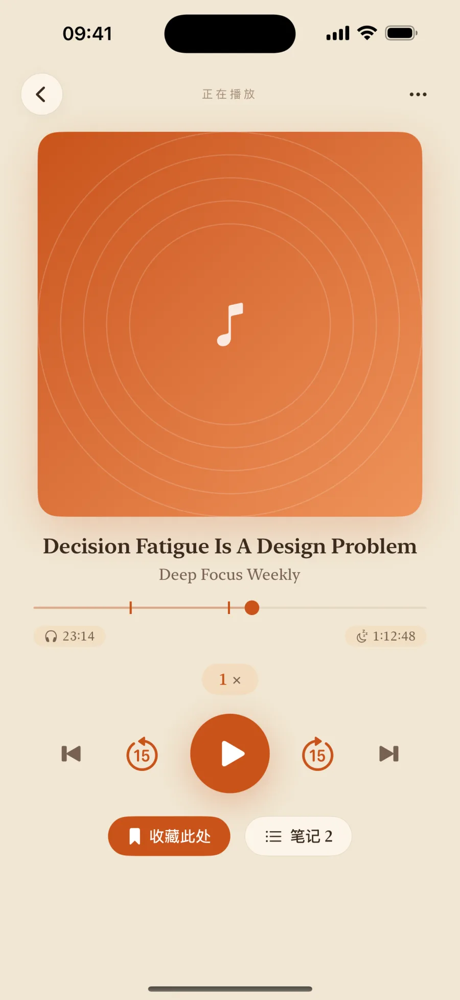
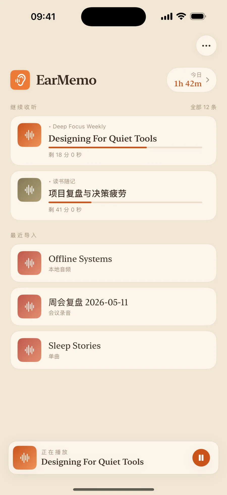
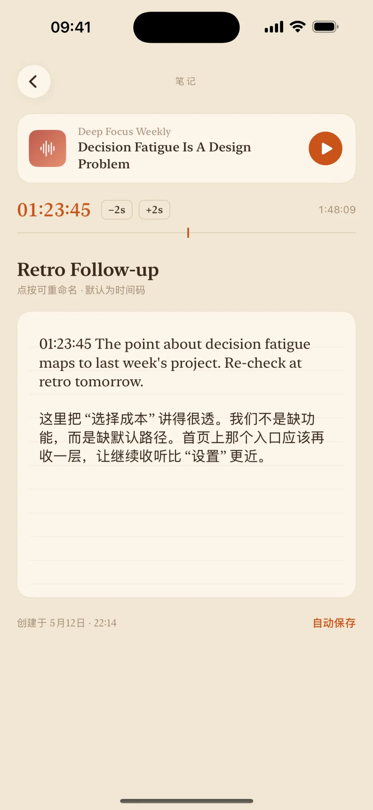
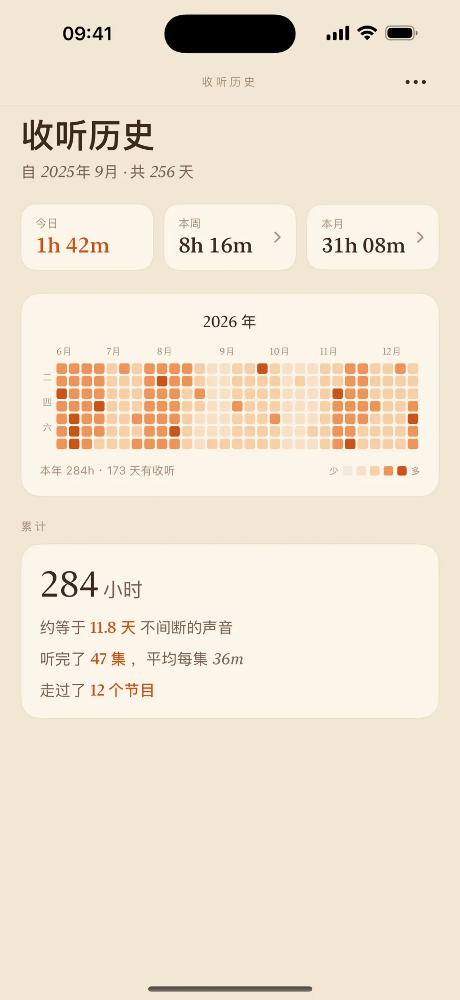
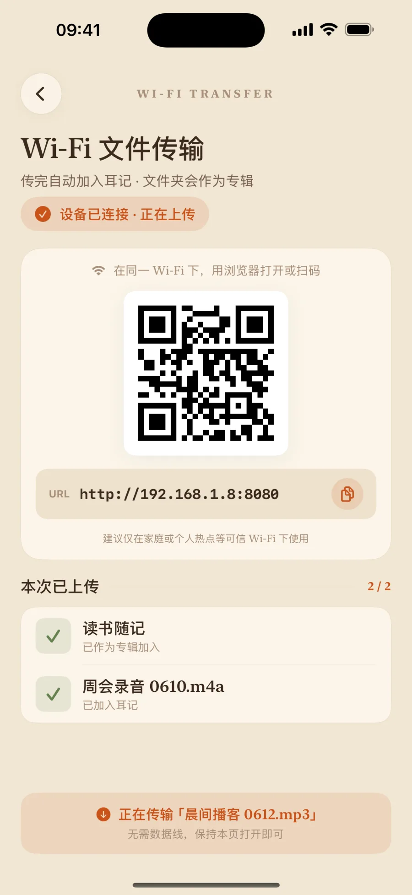

把本地音频，当成一本书来听。
耳记是一款 iOS 本地音频播放器，专门用来听你已经存进手机的长音频——播客、有声书、公开课、采访录音。没有云端服务、不要账号、不追踪，你的资料始终属于你。

为什么是耳记
市面上的播放器，都在抢你的注意力。耳记反过来。
没有推荐流，没有自动播下一集，没有永远刷不完的列表。耳记把你下载下来、没人替你整理的那些长内容，安静地放在一处——听到哪一句想停下，就停下；明天回来，还停在这一句。
继续收听
打开，就回到昨天停下的地方
首页只有一件事：你正在听的几段。每一条都记着进度与剩余时长，按下就接着播——不必翻找，不必想起"我听到哪了"。
- 精确续播到秒，关掉再开毫不走样
- 播客、有声书、课程分类清楚，一眼分辨
- 顶部一枚"今日已听"，看得见自己的节奏

边听边记
在任意一句按下，写一句话钉在那里
听到值得记的，停下来写一句。时间戳自动钉住——下次点这条笔记，就跳回那一秒重听。听过的内容，第一次真正留得下来。
- 时间戳笔记，一点即跳回原句
- 按节目、按集数归拢成册，回看清晰
- 随手导出，带去你的笔记软件

收听记录
你听了多久，清清楚楚
今天、这一周、这一年——耳记把你花在长内容上的每一分钟都算给你看。不是为了攀比，而是让"我好像一直在听"变成看得见的数字。
- 年度热力图，一年的收听一眼看完
- 日、周、月明细 + 累计小时换算成天
- 数据全在本地，不上传、不分析你

导入
把文件搬进来，不用线
电脑浏览器打开一个网址，把音频直接拖进耳记，不必数据线、不必云盘。也可以从 信息、邮件、文件，用 iOS 分享表单把文件送进来。
- WiFi 无线传输，浏览器拖拽即传
- 分享表单导入，来自 信息、邮件、文件
- mp3、m4a、flac、aac、wav，mp4 / mov 仅听声音

其余你会想到的，也都备好了
睡眠定时
灵动岛和锁屏上实时倒数，告诉你今晚还能听多久。
后台与锁屏
锁屏和控制中心里就能控制播放，屏幕不用一直亮着。
变速播放
加速或放慢，声音不会变调走样。
书签
一键跳回标记的地方，听长音频很需要。
系统分享导入
从 信息、邮件、文件，或任何能分享的 App 直接送进来。
广泛格式支持
mp3 · m4a · flac · aac · wav；mp4 / mov / m4v 只取音轨来听。
隐私
隐私来自它的结构，不是来自承诺
耳记没有任何外部服务器。设置、播放进度、笔记、书签和统计都只保存在你的设备上。可选的 Wi-Fi 传输让同一局域网内的浏览器直接连接耳记，文件不会经过我们的服务器或云端。
- 不收集任何数据
- 没有第三方 SDK
- 没有广告、没有追踪
- 没有账号、不需要登录
价格
一个价格，买断即用
一次性 ¥38，买断。没有订阅，没有内购，支持家人共享。
你已经存下的那些音频，终于有了一个好好听完的地方。
常见问题
耳记是什么？
耳记（EarMemo）是一款 iOS 本地音频播放器，专为播客、有声书、公开课、讲座与对话录音而设计。你所有的数据——设置、播放进度、书签、笔记、收听统计——都只保存在你的设备上。耳记没有外部服务器，也不需要账号。
耳记和那个名字相近的 AI 背书 / 记忆 App 是同一个吗？
不是。耳记（EarMemo）是一款 iPhone / iPad 上的本地音频播放器，由 Fan YANG 开发，用来播放你已经拥有的播客、有声书、讲座和录音。它和任何名字相近的 AI 学习 / 记忆 / 背单词产品都是不同的、互不关联的产品。耳记没有任何 AI 功能、不需要账号，也没有云端服务。
耳记和 Apple Podcasts、Spotify 有什么不同？
耳记播放的是你已经拥有的本地音频文件——你下载好的播客、有声书、讲座录音、对话录音。它不从任何目录流播放，没有订阅，也不需要账号。它是给这样一类人用的：手里已经存了一批音频文件，想专心把它们听完。
耳记可以离线使用吗？
可以。播放、统计、笔记、书签和搜索都不依赖互联网，飞行模式下可以正常使用。Wi-Fi 传输是可选功能，只有你主动打开时才会使用局域网。
Wi-Fi 传输会把文件上传到耳记的服务器吗？
不会。打开 Wi-Fi 传输时，耳记只会在你的 iPhone 或 iPad 上临时启动一个本地网页服务；同一 Wi-Fi 下的浏览器直接连接你的设备。文件不会经过耳记的服务器或云端，关闭传输页面后本地服务就会停止。
耳记支持哪些音视频格式？
耳记支持常见的音频格式：mp3、m4a、aac、flac、wav。视频文件（mp4、mov、m4v）会按音频播放，所以你可以只听不看。
耳记会收集数据吗？
不会。耳记不收集任何用户数据。没有第三方 SDK、没有数据分析、没有广告、没有追踪。所有数据都只保存在你的设备上；如果你开启了 iCloud，会跟随你自己的 iCloud 备份。
耳记支持 iPad 吗？
支持。耳记是通用 iOS App，iPhone 和 iPad 都能用；iPad 上是为大屏适配的分栏布局。
可以从其他 App 导入文件吗？
可以。耳记接入了 iOS 系统分享菜单——你可以从 信息 / 邮件 / 文件 或任何支持媒体文件分享的 App，把文件直接送进耳记。